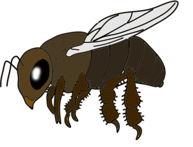

 Види медоносних бджіл Бджоли відбулися близько 56 мільйонів років тому в Кайнозойської Ері. Місцем їх походження вважається сучасна південно-східна Азія. 14 мільйонів років тому бджоли вже були поширені по всіх континентах світу, про що свідчать знаходження скам'янілостей. Сучасні бджоли медоносні підрозділяються на 3 підроду, 9 видів і 44 підвиду. Підрід з назвою Apis - це ті бджоли, до яких належать медоносні. Розділяють 3 види медоносних бджіл:
Європейські (11 порід); Африканські (12 порід), Азіатсько-средневосточного (8 порід). Сьогодні розглядаються самі медоносні породи бджіл з точки зору бджільництва.
Європейська темна бджола
Раніше називалася темної лісової бджолою. У особин - крупний тулуб з коротким хоботком (6 мм). Темно-сіре забарвлення без вкраплень жовтизни. Матка здатна відкласти до 2000 яєць на добу за сприятливих умов. Бджоли демонструють підвищену зимостійкість, стійкі до гнилизну європейського, токсикозу падевому і нозематозу. Збирають багато прополісу в порівнянні з іншими породами, пізніше вилітають на збір з сім'ї і раніше повертаються, ніж їх південні побратими. Демонструють середнє перемикання між видами медоносів. Середня медопродуктивность бджіл - 30 кг, потроюється в сприятливі сезони. Не терплять недбалого поводження з вуликами пасічниками, вельми злобливость і схильні до роїння й стійкості рою.
Сіра гірська кавказька бджола
Широко поширена на Закавказзі (Грузія, Азербайджан, Вірменія), але також спостерігається в Європі. Добре пристосована під коротку зиму, слабкі медоноси, і різкі перепади температури. Популяції агресивно витісняють інші породи на своїх територіях, при цьому самі в окремих регіонах Кавказу заміщуються карпатськими бджолами. Забарвлення сіре з сріблом, на темному черевці немає жовтих смуг. Хоботок довжиною 7 мм (найбільший розмір серед медоносних бджіл). Середня плодючість матки - 1500 яєць на добу, що знижується в період медозбору через особливості зайняття медом вулика - спочатку вони її складують в центральній частині гнізда. В період активного виділення нектару рослин максимально задіюють всіх бджіл на збір і формування запасів, ніж за стеження за потомством. Рано вилітають, пізно повертаються. Середній медозбір приблизно 28-29 кг. Збирають багато прополісу.
Жовта кавказька бджола
Має хоботок довжиною 6,5 мм. На відміну від свого сірого гірського родича, жовта кавказька бджола має багато жовтого кольору в своєму забарвленні, нерідко - яскраво-жовтою забарвлення. Плодючість маток в середньому понад 2000 яєць в день. Живуть в місцях з м'яким кліматом. Відрізняються незлобивістю. Погано пристосовані до холодів, а також помітно чутливі до таких хвороб як гнилець і нозематоз (як і сіра порода). Демонструє знижену продуктивність, в порівнянні з іншими породами.
Карпатська Українська бджола
Які бджоли самі медоносні? Ось вони! Мають найбільше поширення в Україні, Білорусії та Росії. Прекрасно пристосовані до суворих зимових умов, малій кількості корму взимку. Забарвлення темно-сірий з волосками сріблястого кольору, жовтизни майже немає. Мають великий розмах крил. В добу матка може відкладати близько 1800 яєць. Виробляє багато воску. Медозбір починається ранньою весною і зберігається високим все літо. На головному хабарі демонструють дуже гарну продуктивність, чому ці бджоли - сама медоносна порода бджіл. Майже не рояться. Миролюбні, які не злобливо.
Степова Українська бджола
Мешкає в лісостепу і заході України. Дає середній збір меду і добре виживає в помірному кліматі. Хоботок довжиною 6,5 мм, сіре забарвлення, з можливою жовтизною на черевці, у його передній частині. Досить висока плодючість матки бджоли. Самка медоносної бджоли дає до 2300 яєць на добу. Відрізняються хорошим виділенням воску, малої ройливостью, середньої злобівостью, відмінною зимостійкістю і прекрасної опірністю до найбільш поширеним бджолиним хвороб.
Італійська бджола
Завезена зі Сходу Італії. Чи не холодостійка різновид бджоли, прекрасно працює влітку, але вимагає спеціального звернення, так як може віддавати значну частину зусиль вихованню потомства. Забарвлення золотистий зі світло-коричневими волосками по всьому тілу. Максимально продуктивна порода по частині кладки яєць - до 2500 штук на добу. При цьому відрізняється слабкою пристосованістю до хвороб і поганий - до холоду. Зиму переносить на цукровому кормі. Добре перемикається на кращі медоноси з гірших. Але не ці бджоли відповідають на питання, яка порода бджіл сама медоносна.
Крім зазначених вище порід, на кожній пасіці можуть жити свої, гібридні породи, що включають характерні особливості декількох порід. Яскравим прикладом тому є далекосхідний різновид бджоли, яка не зізнається окремою породою і включає в себе характерні риси всіх описаних вище бджіл. Цей різновид орієнтована на збір з липи, має відмінну адаптацію до суворих умов, хвороб і шкідників.